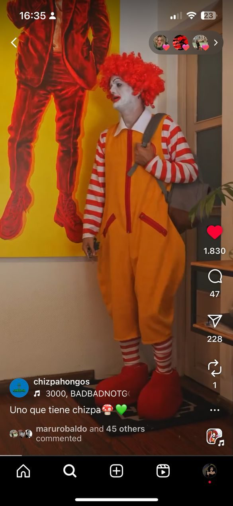
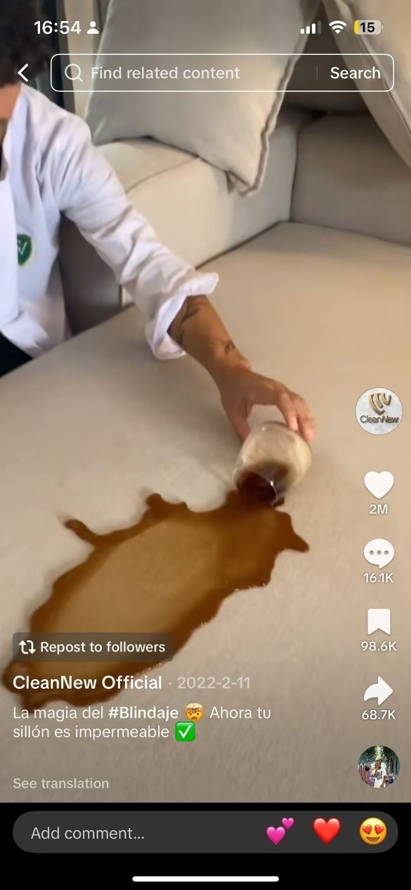

Gianna Dallape
Photography / Video / Content
Photography / Video / Content
Image-maker on both sides of the lens.
Available for brands, artists and editorial.
Available for brands, artists and editorial.
Portfolio 2026
Bookings open
Bookings open
GiannaDallape
(FASHION) (FOOD) (TRAVEL) (FILM) (AI)
Images made by someone who has been the image.
Photographer & model.
Fashion, beauty, food, artists, UGC.
Start a project
Fashion, beauty, food, artists, UGC.
(PHOTO)(VIDEO)(CONTENT)(SOCIAL)
Before holding the camera I stood in front of it I know how a brand looks at a body, a fabric, a plate what the light must do and what the face must hold back. So every frame is built from both sides. A way to give a product a character it can step into.
Gianna Dallape — StatementBoth sides of the lens
Selected work
Index
—
About
Both sides of the lens
GD / 02
In front
Model
Years of castings, sets and campaigns taught Gianna what a brand actually asks of an image: how a garment has to fall, which angle sells, how long a pose can hold before it goes stiff.
Behind
Photographer
Now she directs it. She briefs talent the way she wanted to be briefed, and shoots fashion, artists, food and lifestyle with the same quiet, editorial eye. On analog and digital.
Frames in motion
01 / 10
Services
What she makes
Click to open
Process
From brief to feed
4 steps
Contact
Let's create together.
Reply within 48h
Email
dallapegia@gmail.com
Content that performs

Fun content
Watch ↗Artist biography content
Watch ↗
Viral TikTok content
Watch ↗Instagram story views for a burger restaurant client, before and after her content.